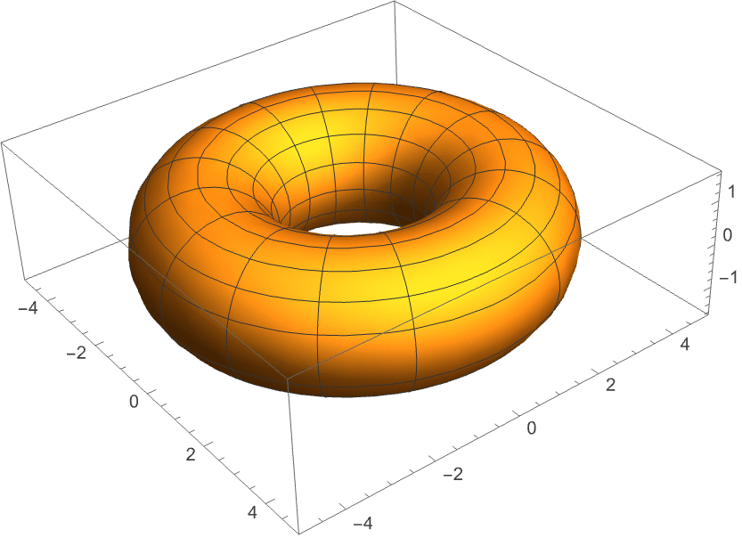
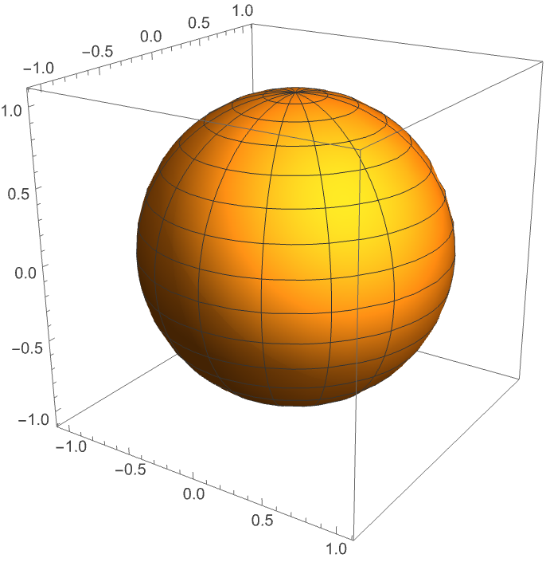
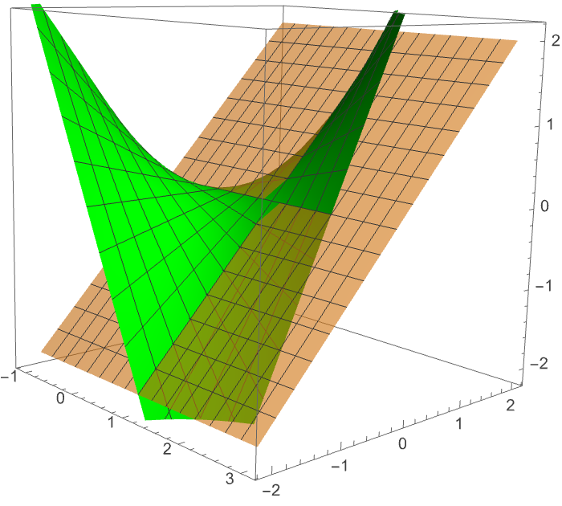
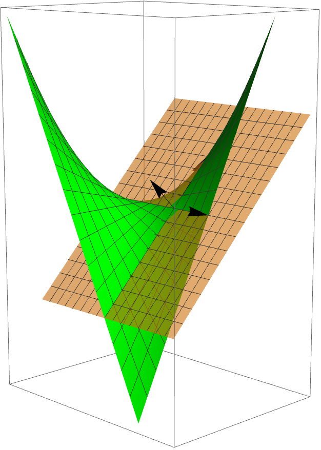
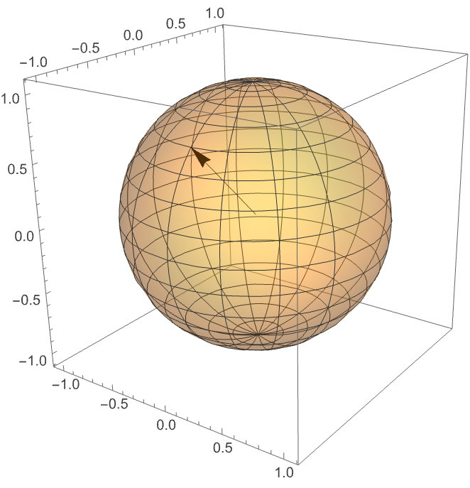

Modern Differential Geometry
Differential geometry is a mathematical area of study that is at the foundation of modern physical scientific interpretations of the world and the universe around our world. It is the foundation of fields of study like the theory of relativity, and has applications to things like machining. Even concepts like Einstein's interpretation of space as a surface of "space-time" has its roots in differential geometry and manifolds. Modern differential geometry is based off of several key mathematical concepts, amongst which are manifolds, tangent spaces, and differentiable forms.
Manifolds
We can begin our discussion of manifolds with a definition of what a manifold is. We can define an $m$-dimensional manifold to be a set $M$ with an $m$-dimensional maximum atlas with the conditions that $M$ can be covered by countably many coordinate charts and that, given two points $p,q \in M$ with coordinate charts $(U_\alpha,\phi_\alpha)$ and $(U_\beta,\phi_\beta)$, such that $p\in U_\alpha$ and $q\in U_\beta$, $U_\alpha \cap U_\beta=0$ (Springer 2020, p. 19,21). Now this is an abstract, non-coordinate based, definition. For the sake of this post we can define a manifold with a more basic definition. According to the textbook Introduction to Differential Geometry: Manifolds, vector fields, and differential forms, "An n-dimensional manifold is something that "locally" looks like $\mathbb{R}^n$" (Springer 2020, p. 2).
Manifolds in $3$-dimensional space (generally $2$-dimensional manifolds) are easiest for us to picture, given that we live in a $3$-dimensional world. Several examples would be a $2$-dimensional torus, $T^2$, or a $2$-dimensional sphere, $S^2$.


One important sub category of manifold for the subject of differential geometry is a surface. A surface can be defined as a $2$-dimentional manifold. Therefore, both a $2$-torus and a $2$-sphere would be considered surfaces.
On a side note, another example of a manifold, which is more abstract and harder to visualize is $\mathbb{R}^n$ which would be considered an $n$-dimensional manifold.
Tangent Spaces
In order to speak on tangent spaces we should begin by defining what a tangent space is. "For embedded submanifolds $M\subset \mathbb{R}^n$, the tangent space $T_pM$ at point $p\in M$ can be defined as the set of all velocity vectors $v=\dot{\gamma}(0)$, for smooth curves $\gamma\colon J\to M$ with $\gamma(0)=p$" (Springer 2020, p. 83). Now this definition is specifically related to a surface that is parameterized in terms of time, but our surface can be parameterized by another variable or variables, in which case, the velocity vectors would describe motion in variable directions.
Tangent spaces can be visualized in cases such as in $\mathbb{R}^3$ where they are represented as $2$-dimentional planes, which is tangent to the surface at any arbitrary point $p$. This plane is spanned by the principal, non-colinear velocity vectors representing the surface at the given point $p$.

Now you may ask, what is the point of the tangent plane of a surface? One answer is that it allows us to find the unit normal vector for each point on a surface, which we can use in conjunction with Gaussian maps to find the curvature of a given point on a surface.


Another thing to note is that while we have been focusing on $2$-dimensional tangent planes, most readers will have a lot of experience with $1$-dimensional tangent spaces in the forms of tangent lines, which are specifically introduced and emphasized in single-variable calculus.
Differential Forms
A differential form is related to the concept of integrals. As a simple definition we can describe it as the thing that is being integrated. This is quite a basic definition, though, given differential forms can provide us with an alternative way of approaching multi-variable calculus. Specifically, we will discuss $0$-forms, $1$-forms, and $2$-forms which are those referred to as differential forms (Tao 2020, p. 7). One thing to note is that a $k$-form can act on any $n$-dimensional manifold such that $0\leq k\leq n$ (Tao 2020, p. 7).
To begin, a $0$-form is the most simple form we will discuss. According to Differential Forms and Integration, "A $0$-form on a manifold $X$ is the same thing as a scalar function $f\colon X\to \mathbb{R}$, whose integral on a positively oriented point $x$ (which is $0$-dimensional) is $f(x)$, and on a negatively oriented point $x$ is $−f (x)$" (Tao 2020, p. 7). Basically, a $0$-form is a function that only operates in scalar values, and which keeps orientation in order to determine the final sign.
A $1$-form is characterized by a $df$ value that can be represented as the infinitesemal change in $x$, which is now a vector input, modified by either a constant of proportionality $f(x_i)$ (in the case of $1$-dimensional space) or, in the case of higher dimensional space, a linear transformation. This linear translation is often represented by $\omega$ and is "a cotangent vector at $x_i$" (Tao 2020, p. 4). Therefore this would make the $1$-form, which is in the integral, a scalar which can act on manifolds which are $1$-dimension or less.
A $2$-form also uses a linear transformation operator, but instead of using an infinitesemal change in $x$, it uses an infinitesemal change in an infinitesemally small parallelogram. This parallelogram can be characterized by $\Delta x_1 \wedge \Delta x_2$, where $\Delta x_1$ and $\Delta x_2$ are both vector quantities describing the lengths of the two respective sides of said parallelogram. Once again, the linear transformation applied results in a scalar value, despite having vector inputs.
One important thing to note with differential forms is that, for instance, a $1$-form, can act in space that is larger than $1$-dimension. The constraint that is that the manifold it acts on must be $1$-dimension or less (e.g. a line or curve).
Two important applications of differential forms are in the derivations of different variations of the Fundamental Theorem of Calculus, specifically Stokes Theorem, which can be derived using the concept of the $2$-form.
References
Springer (2020). Introduction to Differential Geometry: Manifolds, vector fields, and differential forms. Retrieved April 16, 2026, from https://www.math.toronto.edu/laithy/3672021/DiffGeomNotes_short.pdf
Tao, T. (2020). Differential Forms and Integration. Retrieved April 30, 2026, from https://www.math.ucla.edu/%7Etao/preprints/forms.pdf